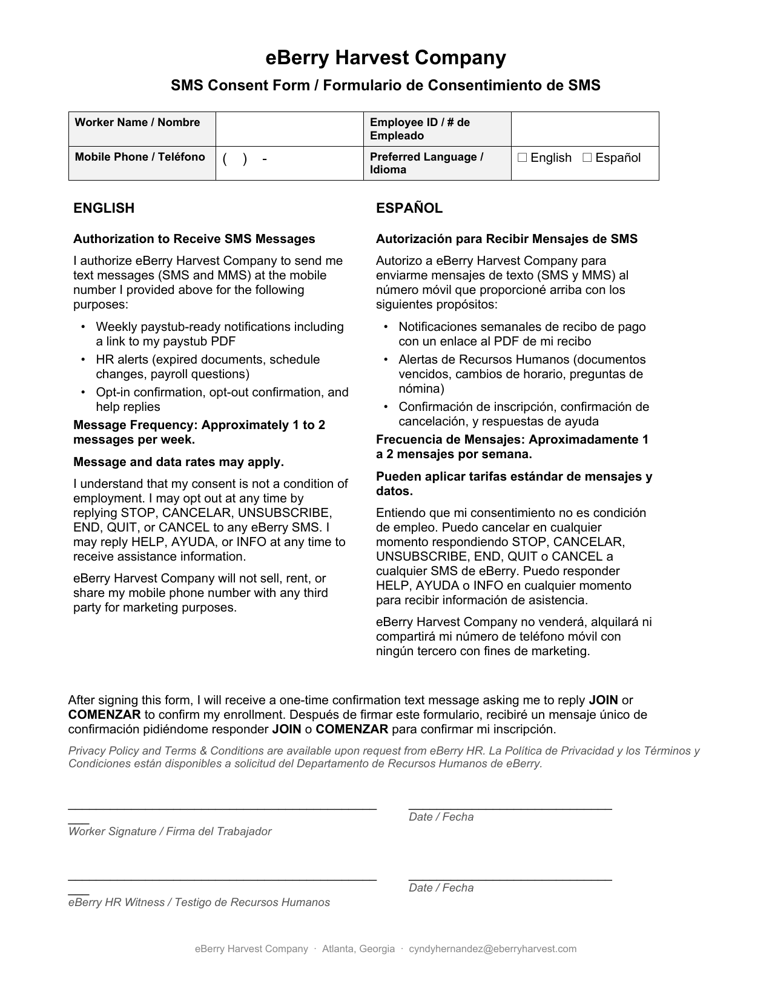

Weekly paystub-ready notifications and HR alerts for our H-2A agricultural workers — bilingual (English / Spanish), opt-in only, with full TCPA compliance.
The eBerry SMS notifications program is used exclusively to communicate with our own active H-2A workers about their pay and HR records. We do not solicit, market, or send commercial messages.
Approximately 1 to 2 messages per week, primarily after the weekly Friday payroll close. Frequency may increase temporarily during payroll corrections or HR-driven alerts.
eBerry Harvest does not advertise this SMS program publicly. Enrollment happens entirely in person, during H-2A onboarding at the farm office, using the bilingual paper consent form shown below.
The image below is the exact consent form every eBerry SMS recipient signs in person before any messages are sent.

Our workforce is composed of H-2A seasonal agricultural workers who do not have routine internet or email access while at the farm. In-person verbal explanation plus signed paper consent during onboarding is the legally compliant, language-accessible, and operationally appropriate method for this audience. The follow-up confirmation SMS provides the second affirmative consent step (double opt-in).
Examples of the actual messages eBerry sends to enrolled workers.
Workers may opt out or request help at any time by replying to any eBerry SMS with one of the following keywords. Keywords are case-insensitive and supported in English and Spanish.
| Action | Keywords accepted | What happens |
|---|---|---|
| Opt out | STOP · CANCELAR · UNSUBSCRIBE · END · QUIT · CANCEL · NO | One-time confirmation sent; no further messages. |
| Get help | HELP · AYUDA · INFO | Assistance contact info returned. |
| Re-subscribe | JOIN · COMENZAR · START · SI · YES | Worker is re-enrolled after previously opting out (after paper consent reconfirmed with HR). |
Effective Date: May 25, 2026 · Last Updated: May 25, 2026
This SMS Privacy Policy (“Policy”) describes how eBerry Harvest Company (“eBerry”, “we”, “us”, “our”) collects, uses, and protects the mobile phone number and related information of workers who participate in our SMS notification program.
eBerry Harvest Company is an H-2A agricultural employer headquartered in Georgia, United States, operating across multiple farm locations.
Through the eBerry SMS program we collect only:
We do not collect mobile location data, contacts, device identifiers, browser history, or any other information through the SMS program.
We use your mobile phone number solely to:
eBerry Harvest Company does not sell, rent, lease, or share mobile phone numbers or any SMS-related data with third parties for marketing or any other purpose. Mobile information is shared only with our SMS delivery vendor (Twilio Inc.) solely to transmit messages, and with our internal HRIS database to maintain consent records.
No mobile information will be shared with third parties or affiliates for marketing or promotional purposes.
Workers enrolled in the SMS program typically receive 1 to 2 messages per week, primarily after weekly payroll close. Frequency may increase temporarily during peak payroll events (corrections, reissues) or HR-driven alerts (document expirations).
Message and data rates may apply. eBerry Harvest Company does not charge workers for messages, but standard carrier rates from your mobile provider apply to incoming and outgoing text messages.
You may opt out at any time by replying any of the following keywords to any SMS from eBerry Harvest:
STOP · CANCELAR · UNSUBSCRIBE · END · QUIT · CANCEL · NO
You will receive a one-time confirmation that you have been unsubscribed, after which no further messages will be sent.
Reply HELP or AYUDA or INFO to any SMS from eBerry Harvest to receive assistance contact information.
For additional help, contact eBerry Harvest HR at the address below.
Consent records and message logs are retained in eBerry's internal HRIS database for the duration of the worker's employment plus seven (7) years thereafter, to meet H-2A recordkeeping and TCPA compliance requirements.
SMS-related data is stored in a secure database (Supabase, hosted on AWS) with role-based access control, encryption at rest and in transit, and access limited to authorized eBerry HR and payroll staff.
We may update this Policy from time to time. The current version will always be available at this URL.
For questions about this Policy or to exercise any rights described above, contact:
eBerry Harvest Company
Attn: HR / SMS Privacy
Email: cyndyhernandez@eberryharvest.com
Esta Política de Privacidad de SMS (“Política”) describe cómo eBerry Harvest Company (“eBerry”, “nosotros”) recopila, usa y protege el número de teléfono móvil y la información relacionada de los trabajadores que participan en nuestro programa de notificaciones por SMS.
eBerry Harvest Company es un empleador agrícola H-2A con sede en Georgia, Estados Unidos, que opera en varias ubicaciones agrícolas.
A través del programa de SMS de eBerry recopilamos únicamente:
No recopilamos datos de ubicación, contactos, identificadores del dispositivo, historial del navegador, ni ninguna otra información a través del programa de SMS.
Usamos su número de teléfono móvil únicamente para:
eBerry Harvest Company no vende, alquila, arrenda ni comparte números de teléfono móvil ni datos relacionados con SMS con terceros para fines de marketing ni ningún otro propósito. La información móvil se comparte únicamente con nuestro proveedor de envío de SMS (Twilio Inc.) con el único propósito de transmitir los mensajes, y con nuestra base de datos interna de HRIS para mantener los registros de consentimiento.
Ninguna información móvil será compartida con terceros ni afiliados para fines de marketing o promocionales.
Los trabajadores inscritos en el programa de SMS típicamente reciben 1 a 2 mensajes por semana, principalmente después del cierre semanal de nómina. La frecuencia puede aumentar temporalmente durante eventos pico de nómina (correcciones, reemisiones) o alertas de Recursos Humanos (vencimientos de documentos).
Pueden aplicar tarifas estándar de mensajes y datos. eBerry Harvest Company no cobra a los trabajadores por los mensajes, pero su proveedor de telefonía móvil puede cobrar tarifas estándar por mensajes de texto entrantes y salientes.
Puede cancelar su suscripción en cualquier momento respondiendo cualquiera de las siguientes palabras clave a cualquier SMS de eBerry Harvest:
STOP · CANCELAR · UNSUBSCRIBE · END · QUIT · CANCEL · NO
Recibirá una confirmación única de que ha sido dado de baja, después de lo cual no se enviarán más mensajes.
Responda HELP o AYUDA o INFO a cualquier SMS de eBerry Harvest para recibir información de contacto de asistencia.
Para ayuda adicional, comuníquese con Recursos Humanos de eBerry Harvest en la dirección a continuación.
Los registros de consentimiento y los registros de mensajes se conservan en la base de datos interna de HRIS de eBerry durante la duración del empleo del trabajador más siete (7) años posteriores, para cumplir con los requisitos de mantenimiento de registros H-2A y de cumplimiento de TCPA.
Los datos relacionados con SMS se almacenan en una base de datos segura (Supabase, alojada en AWS) con control de acceso basado en roles, cifrado en reposo y en tránsito, y acceso limitado al personal autorizado de Recursos Humanos y nómina de eBerry.
Podemos actualizar esta Política de vez en cuando. La versión actual siempre estará disponible en esta URL.
Para preguntas sobre esta Política o para ejercer cualquiera de los derechos descritos anteriormente, comuníquese con:
eBerry Harvest Company
A la atención de: Recursos Humanos / Privacidad de SMS
Correo electrónico: cyndyhernandez@eberryharvest.com
Effective Date: May 25, 2026 · Last Updated: May 25, 2026
By signing the eBerry SMS Consent Form during your onboarding intake at eBerry Harvest Company (“eBerry”, “we”, “us”) and by replying with the affirmative keyword (JOIN or COMENZAR) to our one-time confirmation invite, you agree to these Terms and Conditions (“Terms”) governing the eBerry SMS notification program (the “Program”).
The Program is available only to active workers of eBerry Harvest Company who:
The Program sends:
Messages are delivered as SMS or MMS depending on content. If MMS delivery fails, the same content is automatically re-sent as an SMS with a link to the PDF.
You will typically receive 1 to 2 messages per week, primarily after the weekly payroll close. Frequency may increase temporarily during payroll corrections, reissues, or HR-driven alerts.
Message and data rates may apply. eBerry Harvest Company does not charge for messages, but standard carrier rates from your mobile provider apply to incoming and outgoing text messages. Contact your mobile carrier for details about your plan.
To opt out of the Program at any time, reply to any eBerry SMS with one of the following keywords:
STOP · CANCELAR · UNSUBSCRIBE · END · QUIT · CANCEL · NO
You will receive a one-time confirmation that you have been unsubscribed. No further messages will be sent except as required by law.
To get help, reply with one of: HELP · AYUDA · INFO. You will receive assistance contact information.
To re-subscribe after opting out, reply with JOIN, COMENZAR, START, SI, or YES, or contact eBerry HR to update your consent on file.
Carriers including AT&T, Verizon, T-Mobile, Sprint, US Cellular, and others are not liable for delayed or undelivered messages.
Use of the Program is governed by our SMS Privacy Policy, above on this page. We do not sell, rent, lease, or share your mobile phone number with third parties for marketing or any other purpose.
We may update these Terms from time to time. Continued participation in the Program after changes constitutes acceptance of the updated Terms. The current version is always available at this URL.
eBerry Harvest reserves the right to modify, suspend, or terminate the Program at any time. If the Program ends, we will send a final notification to all active subscribers.
These Terms are governed by the laws of the State of Georgia, United States, without regard to conflict-of-laws principles. Any disputes arising under these Terms shall be resolved in the state or federal courts located in Atlanta, Georgia.
For questions about these Terms or the Program, contact:
eBerry Harvest Company
Attn: HR / SMS Program
Email: cyndyhernandez@eberryharvest.com
Al firmar el Formulario de Consentimiento de SMS de eBerry durante su proceso de incorporación en eBerry Harvest Company (“eBerry”, “nosotros”) y al responder con la palabra clave afirmativa (JOIN o COMENZAR) a nuestra invitación única de confirmación, usted acepta estos Términos y Condiciones (“Términos”) que rigen el programa de notificaciones por SMS de eBerry (el “Programa”).
El Programa está disponible únicamente para trabajadores activos de eBerry Harvest Company que:
El Programa envía:
Los mensajes se entregan como SMS o MMS según el contenido. Si la entrega de MMS falla, el mismo contenido se vuelve a enviar automáticamente como SMS con un enlace al PDF.
Típicamente recibirá 1 a 2 mensajes por semana, principalmente después del cierre semanal de nómina. La frecuencia puede aumentar temporalmente durante correcciones de nómina, reemisiones o alertas de Recursos Humanos.
Pueden aplicar tarifas estándar de mensajes y datos. eBerry Harvest Company no cobra por los mensajes, pero su proveedor de telefonía móvil puede cobrar tarifas estándar por mensajes de texto entrantes y salientes. Contacte a su proveedor de telefonía móvil para más detalles sobre su plan.
Para cancelar el Programa en cualquier momento, responda a cualquier SMS de eBerry con una de las siguientes palabras clave:
STOP · CANCELAR · UNSUBSCRIBE · END · QUIT · CANCEL · NO
Recibirá una confirmación única de que ha sido dado de baja. No se enviarán más mensajes excepto según lo requiera la ley.
Para obtener ayuda, responda con una de: HELP · AYUDA · INFO. Recibirá información de contacto de asistencia.
Para volver a inscribirse después de cancelar, responda con JOIN, COMENZAR, START, SI o YES, o comuníquese con Recursos Humanos de eBerry para actualizar su consentimiento en archivo.
Los operadores incluyendo AT&T, Verizon, T-Mobile, Sprint, US Cellular y otros no son responsables por mensajes retrasados o no entregados.
El uso del Programa se rige por nuestra Política de Privacidad de SMS, arriba en esta página. No vendemos, alquilamos, arrendamos ni compartimos su número de teléfono móvil con terceros para marketing ni ningún otro propósito.
Podemos actualizar estos Términos de vez en cuando. La participación continua en el Programa después de los cambios constituye la aceptación de los Términos actualizados. La versión actual siempre está disponible en esta URL.
eBerry Harvest se reserva el derecho de modificar, suspender o terminar el Programa en cualquier momento. Si el Programa termina, enviaremos una notificación final a todos los suscriptores activos.
Estos Términos se rigen por las leyes del Estado de Georgia, Estados Unidos, sin tener en cuenta los principios de conflicto de leyes. Cualquier disputa que surja bajo estos Términos se resolverá en los tribunales estatales o federales ubicados en Atlanta, Georgia.
Para preguntas sobre estos Términos o el Programa, comuníquese con:
eBerry Harvest Company
A la atención de: Recursos Humanos / Programa SMS
Correo electrónico: cyndyhernandez@eberryharvest.com